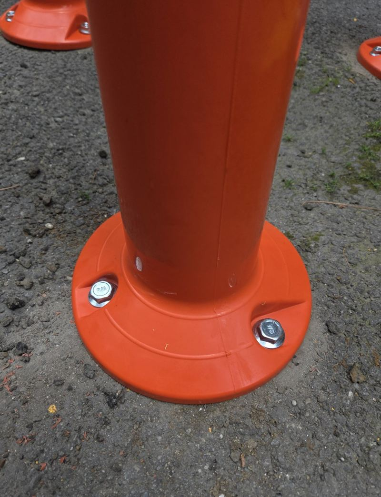
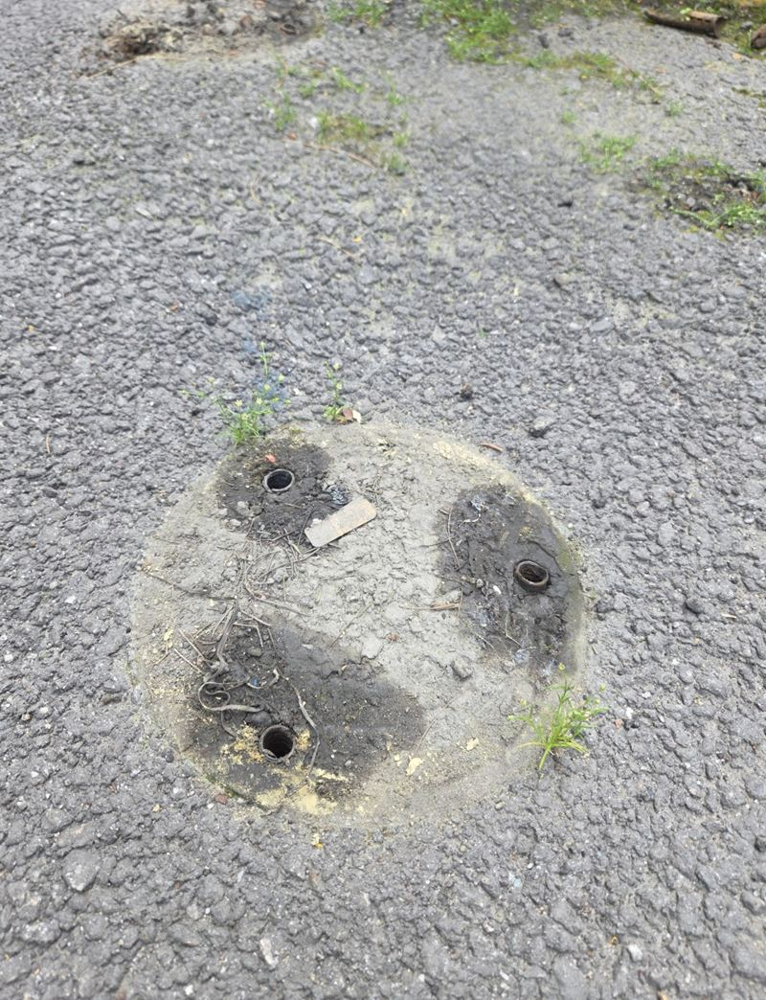
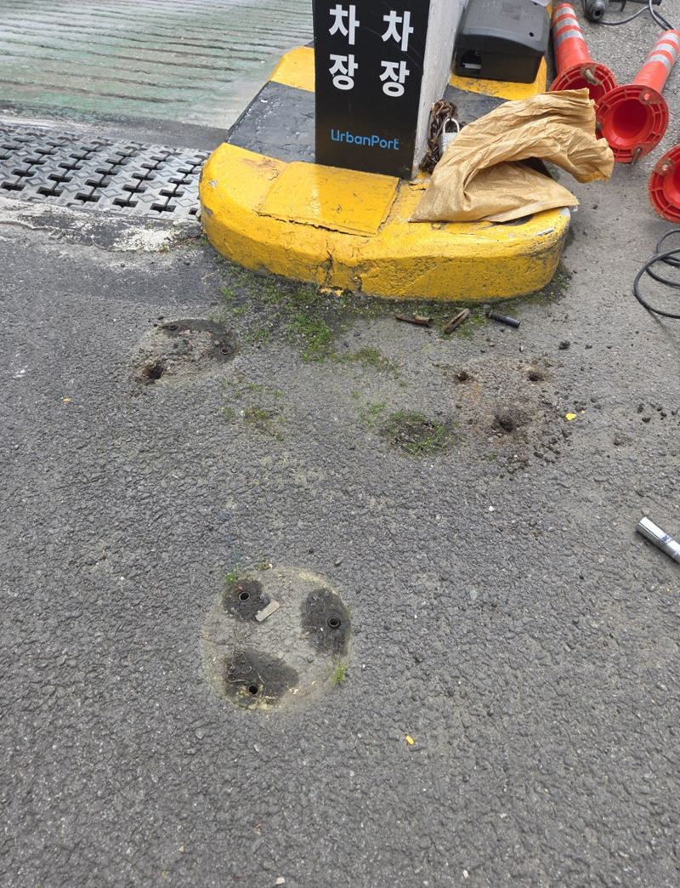
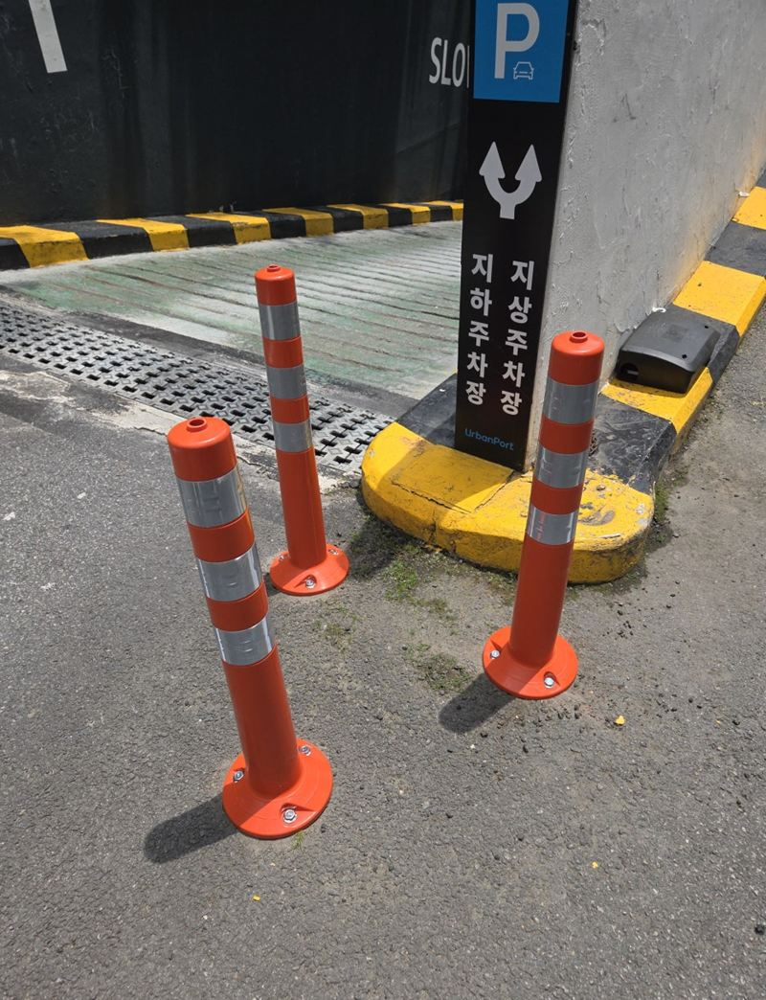
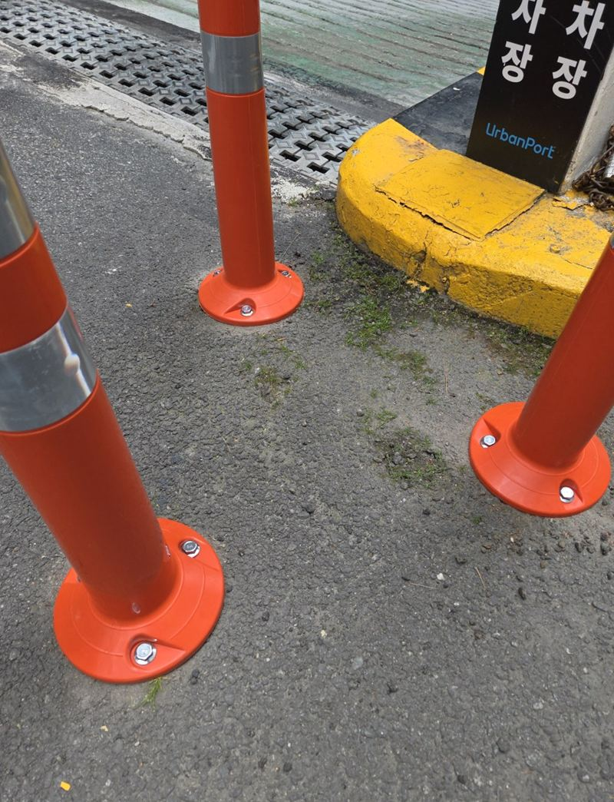
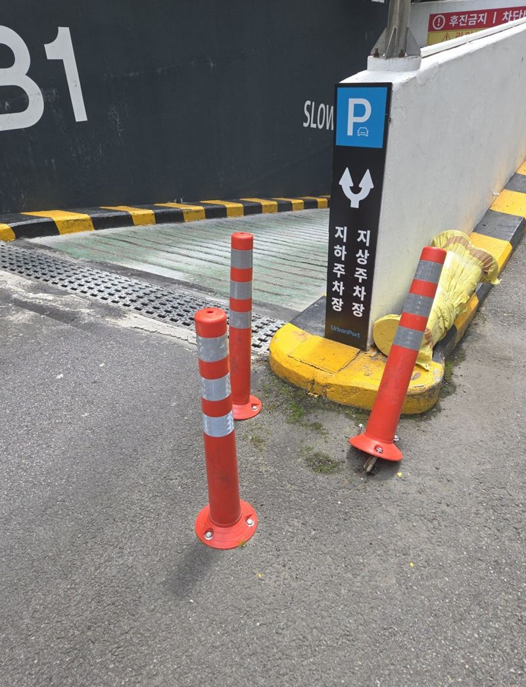

분당 도로 규제봉 앙카볼트 교체 방법
← 밀어서 전후 비교 →
"고정만 되는 수준 말고, 다시 부딪혀도 쉽게 흔들리지 않게 해 주세요. 예전 제품은 더 쓰고 싶지 않아요." 분당 서현동 빌딩 지하주차장 진입로에 선 주황색 규제봉이 차에 받혀, 아래 고정부까지 망가진 현장이었어요. 고객분은 임시로 붙이는 게 아니라 새 제품으로 깔끔하게 바꾸길 원하셨어요. 망가진 규제봉을 걷어 내고, 약해진 옛 구멍 대신 새 자리에 타공해 칼블럭을 넣고 새 규제봉을 세웠어요.
| 현장 | 성남 분당구 서현동 빌딩 지하주차장 진입로 |
|---|---|
| 증상 | 차량 접촉으로 규제봉과 하부 체결부 손상 |
| 요청 | 기존 제품 재사용 없이 새 제품, 파손 흔적은 최대한 덜 보이게 |
| 한 일 | 파손 규제봉 철거 → 바닥 상태 확인 → 새 위치 타공 → 칼블럭 시공 → 새 규제봉 체결 → 수직·흔들림 확인 → 폐기물 수거 |
옛 구멍을 다시 쓰지 않은 이유
규제봉 교체에서 흔한 실수가 원래 박혀 있던 구멍에 그대로 다시 박는 거예요. 겉으로는 멀쩡해 보여도, 충격을 받은 자리는 콘크리트 속이 약해져 있고 앙카를 뽑은 구멍은 넓어져 있어요. 그대로 쓰면 처음엔 단단해 보여도 몇 번 차가 스치면 다시 흔들려요.


그래서 기존 규제봉을 걷어 낸 뒤, 옛 구멍과 겹치지 않는 자리를 새로 골랐어요. 철거 자체는 어렵지 않지만, 결과를 좌우하는 건 그다음 설치예요.
규제봉 앙카 교체 순서
바닥 확인
규제봉은 아스콘, 콘크리트, 보도블록 등 바닥에 따라 고정 방법이 달라요. 바닥 강도와 금 간 곳, 박을 수 있는 깊이를 먼저 봤어요.
새 위치 타공
세울 자리를 정확히 표시하고 구멍을 뚫었어요.

칼블럭 넣기
구멍에 칼블럭을 넣어 나사가 단단히 물리게 했어요. 구멍 깊이와 칼블럭 길이가 맞지 않으면 오래 쓰며 흔들려요.
새 규제봉 체결
새 규제봉 받침을 올려 하나씩 조이고, 흔들림이 없는지 손으로 밀어 봤어요.


다시 흔들리지 않게 하려면
규제봉이 비스듬히 서 있으면 보기에도 안 좋지만, 다음에 차가 닿을 때 힘이 한쪽 나사에만 몰려 쉽게 뽑혀요. 체결을 마친 뒤 수직을 다시 보고, 조임 상태를 한 번 더 확인했어요. 망가진 옛 제품은 모두 수거했어요.

고객분은 "부러진 데만 다시 붙이면 되는 줄 알았는데 바닥 고정이 더 중요하다는 걸 알았다, 흔들림 없이 단단해서 마음에 든다"고 하셨어요.
규제봉 점검, 이렇게 해 두세요
- 밀어 보기손으로 밀었을 때 받침이 들썩이면 나사가 풀린 거예요.
- 기운 것한쪽으로 기울어 있으면 받힌 적이 있다는 신호예요.
- 반사띠밤에 잘 보이도록 반사띠가 벗겨지지 않았는지 봐요.
- 받침 주변 금바닥에 금이 가면 다음엔 바닥 보수까지 필요해져요.
규제봉 교체 질문
규제봉과 볼라드는 뭐가 달라요?
규제봉은 차가 닿으면 휘었다 돌아오는 탄성 제품이고, 볼라드는 단단한 기둥으로 차를 막아요.
하나만 망가져도 오나요?
네, 한 개도 가요. 주변 것들의 흔들림도 함께 봐 드려요.
옛 구멍은 어떻게 하나요?
흔적이 덜 보이게 정리해요. 바닥재에 따라 메우는 방법이 달라요.
아스팔트 바닥도 되나요?
아스콘 바닥에 맞는 고정재를 써서 세워요.
색이나 높이를 바꿀 수 있나요?
새 제품으로 바꿀 때 높이와 색을 고를 수 있어요.
차가 다니는 중에도 작업하나요?
작업 구간만 막고 진행해요. 통행이 적은 시간을 권해요.
규제봉 대신 다른 걸 세울 수 있나요?
차를 확실히 막아야 하면 볼라드나 카스토퍼를 함께 검토해요.
다른 볼라드·규제봉 현장
망가진 규제봉 하부와 주변 바닥 사진을 보내 주세요.
전화 상담 010-4517-9872